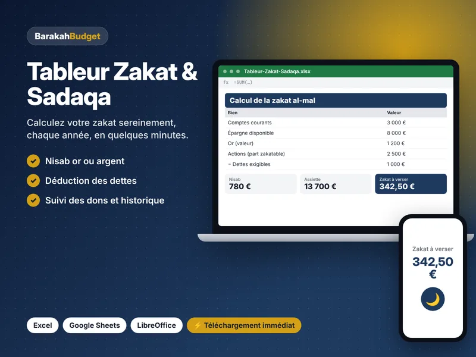

1. Cours du jour
Valeurs indicatives : elles sont remplacées automatiquement par le cours du jour dès son chargement. Vous pouvez aussi les modifier.
2. Vos biens (en €)
3. À déduire
| Total des biens | – |
| Dettes déduites | – |
| Assiette de la zakat | – |
| Nisab | – |

🌙 Le Tableur Zakat & Sadaqa
Calculez votre zakat chaque année en quelques minutes, suivez vos dons et gardez l'historique de vos zakats. Compatible Excel, Google Sheets et LibreOffice. Seulement , téléchargement immédiat après l'achat.
Acheter →Qui doit payer la zakat ?
La zakat al-mal est due par tout musulman pubère et sain d'esprit dont le patrimoine net atteint le nisab et y reste pendant une année lunaire complète (le hawl). Son taux est de 2,5 % de l'assiette.
Nisab or ou argent ?
Le nisab correspond à la valeur de 85 grammes d'or ou de 595 grammes d'argent. Le nisab argent étant beaucoup plus bas, il rend plus de personnes redevables : de nombreux savants le recommandent pour l'argent liquide, par précaution et dans l'intérêt des pauvres. D'autres retiennent l'or. Notre calculateur vous laisse choisir.
Questions fréquentes
La résidence principale et la voiture sont-elles soumises à la zakat ?
Non. Les biens à usage personnel (logement, voiture, meubles, vêtements) ne sont pas soumis à la zakat. Un bien immobilier acheté pour être revendu, en revanche, est considéré comme une marchandise.
Comment compter les actions ?
Si vous achetez et revendez régulièrement, comptez la valeur de marché totale. Pour un placement de long terme, de nombreux savants retiennent seulement la part zakatable des actifs de l'entreprise (souvent estimée à environ 25 à 30 % de la valeur). Les avis divergent : renseignez-vous auprès d'un savant.
À qui verser la zakat ?
Le Coran (sourate 9, verset 60) cite huit catégories de bénéficiaires, dont les pauvres et les nécessiteux. Vous pouvez la verser directement ou via une association reconnue.